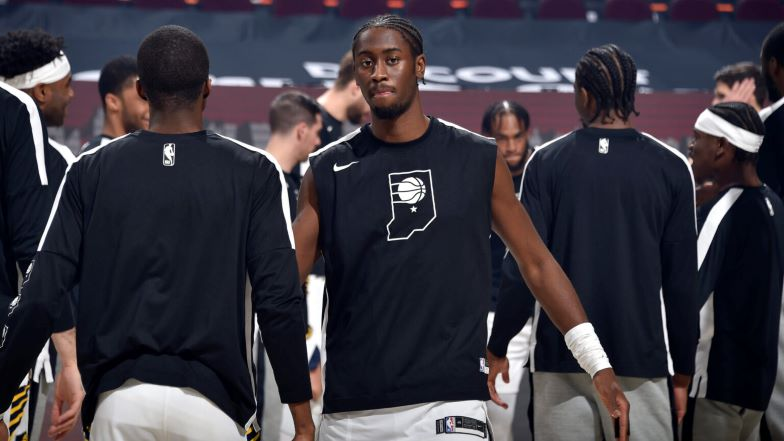
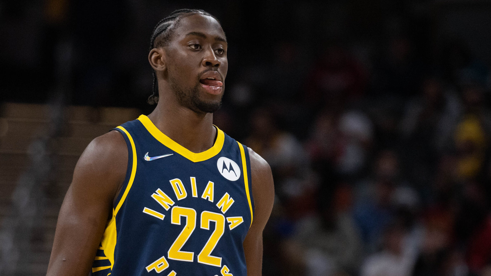

NBA ARTICLES
Top Stories
Cavaliers acquire Caris LeVert in trade with Pacers
Cleveland has traded Ricky Rubio to Indiana in the deal to acquire a talented scorer in Caris LeVert.
From NBA.com News Services
The Cleveland Cavaliers have made a move to strengthen their chance for a playoff spot thanks to a trade with the Indiana Pacers. In the deal, the Pacers will send Caris LeVert to the Cavs for Ricky Rubio and future Draft picks.
“We are very excited to add a dynamic young player of this caliber and experience,” Cavs GM Koby Altman said in a statement Monday. “Caris LeVert fits uniquely into our culture and his Ohio roots brings an immediate connection to our community. We look forward to seeing what type of impact he can make on this roster. We also want to send our best wishes to Ricky Rubio and his family. Ricky has been the consummate professional and his leadership both on and off the court was invaluable and we respect everything he brought to this franchise.”
The Cavs, who won just 22 games last season, have moved into playoff position and believe they can win the Eastern Conference title. They’ve been aggressively shopping for more backcourt help and a wing player after losing guards Collin Sexton and Rubio to season-ending injuries.
LeVert should more than help. The 27-year-old Ohio native averaged 18.7 points and 4.4 assists for the disappointing Pacers, who are 19-36 and already thinking about their future. LeVert scored 42 points Friday night against Chicago.
“He’ll become a brother very quickly with those guys,” said Pacers forward Justin Holiday, who rode to the arena with LeVert. “A serious competitor who wants to win.”

The trade was essentially completed about 90 minutes before the Cavs and Pacers tipped off. Indiana coach Rick Carlisle confirmed the agreement during his pregame news conference, which was slightly delayed so he could tell LeVert he’d been moved.
He can make himself at ho“Yes, that’s me.
Pulling off a major move ahead of this week’s NBA trade deadline, Cleveland added another talented player to its young core by acquiring LeVert, a talented swingman who can score from the Pacers.

LeBron drops triple-double in victorious return
After missing 5 straight games, LeBron James returned to the lineup for L.A., which went 1-4 in his absence.
February 6, 2022

Power Rankings: Suns hold No. 1 spot
See where all 30 teams rank after the first 16 weeks of the 2021-22 season.
8 hours ago

Siakam, Ingram named Players of the Week
The former All-Star forwards claim the honors for Week 16.
4 hours ago

10 things to know from the past 7 days in NBA
All-Star reserves announced, trade season gets underway, Embiid's streak continues and more from Week 16 in the NBA.
4 hours ago

Nash says Nets won't trade Harden
Brooklyn's coach shot down trade rumors involving the former MVP before the Nets...